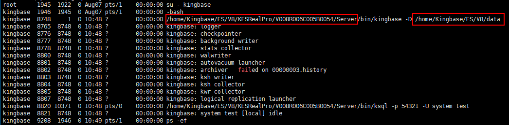
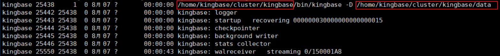

You need to initialize the sys_rman configuration after the system is upgraded from 1.5.0 to 1.6.0 or the first backup or active/standby switchover after restoration using a copy generated in 1.5.0. Otherwise, backup and restoration cannot be performed.
Procedure
Single-node system initialization
- Log in to the host where the Kingbase instance is located.
- Run the following command to check the installation directory and data directory of the Kingbase database:
ps -ef | grep kingbase
The following figure shows the command output.

- Modify the kingbase.conf file.
vi /Data directory/kingbase.conf archive_mode = on archive_command = ''
- Run the following commands to reload the Kingbase configuration. kingbase indicates the name of the database installation user.
su - kingbase /Installation directory/bin/sys_ctl reload -D /Data directory exit
- Run the following commands to configure the node IP address, database installation directory, and data directory in the bin/sys_backup.conf file:
cp /Installation directory/share/sys_backup.conf /Installation directory/bin/sys_backup.conf cd /Installation directory/bin vi sys_backup.conf _target_db_style="single" _one_db_ip="IP address of the current node" _repo_ip="IP address of the current node" _single_data_dir="/Data directory" _single_bin_dir="/Installation directory/bin"
- Run the following commands to complete the initialization. kingbase indicates the name of the database installation user.
su - kingbase cd /Installation directory/bin ./sys_backup.sh init
Initializing a cluster
- Log in to the host where the Kingbase instance is located.
- Run the following command to check the installation directory and data directory of the Kingbase database:
ps -ef | grep kingbase
The following figure shows the command output.

- Run the following commands to modify the kingbase.conf file on the active/standby node:
vi /Data directory/kingbase.conf archive_mode = on archive_command=''
- Run the following commands to reload the Kingbase configuration. kingbase indicates the name of the database installation user.
su - kingbase /Installation directory/bin/sys_ctl reload -D /Data directory exit
- Run the following commands to configure the node IP address, database installation directory, and data directory in the bin/sys_backup.conf on the active and standby nodes:
cp /Installation directory/share/sys_backup.conf /Installation directory/bin/sys_backup.conf cd /Installation directory/bin vi sys_backup.conf _target_db_style="cluster" _one_db_ip="IP address of the current node" _repo_ip="IP address of the current node" _single_data_dir="/Data directory" _single_bin_dir="/Installation directory/bin" _use_scmd=off

Steps 1 to 5 must be performed on both the active and standby nodes.
- Run the following commands on the repo node to complete the initialization. kingbase indicates the name of the database installation user.
su - kingbase cd /Installation directory/bin ./sys_backup.sh init
Step 6 must be performed on the active node.